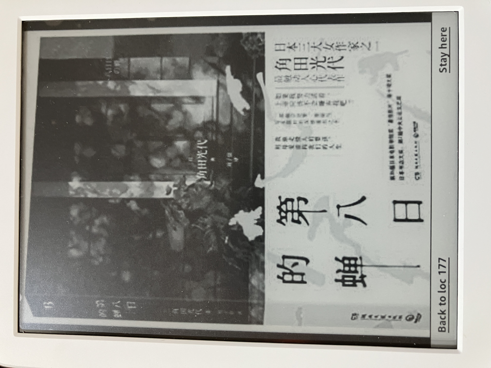

角田光代-第八日的蟬

我之前就有接觸過角田光代的散文，我個人覺得角田光代私底下是一個很有趣的人，會為了一點小事而懊惱不已，而且會有一些異於常人的想法（要不然怎麼當作家？）。但是小弟一直沒有機會接觸角田光代的小說，直到讀書群的群友有介紹角田光代的紙之月，而且頗受他的好評，所以我也就索性取得了他的另一本作品-第八日的蟬。
第八日的蟬主要是在描寫一個介入男方婚姻的第三者野野宮希和子，因為抱走男方家的剛出生的女兒，隨即借住友人家，奇怪的老阿婆家，甚至加入神秘的宗教團體，期望過著與世隔絕的生活，以免被人發現。但是隨著宗教團體與外界引發糾紛，導致身分有曝光的風險。因此，又輾轉逃亡，最後終於事蹟敗露，被警方逮捕。
這時書中又突然以被抱走的孩子，秋山惠理菜的角度來觀看整個事件的後續發展。惠理菜在野野宮被逮捕後回到自己原本的家，可是他發現他跟這個家一直格格不入，父母親也因為這起事件，導致夫妻關係破裂（因為第三者介入），加上新聞大肆報導，惠理菜的父親也背上負心漢的標籤，成為鄰里八卦的話題。在不堪其擾下，惠理菜一家人不停搬家，父親母親也必須更換工作，生活大受影響，甚至怪罪惠理菜⋯
惠理菜成年後離家獨自居住，原本以為可以遠離之前的一切，可以隱姓埋名，重新開始他的人生。但是萬萬沒想到，他認識了有婦之夫的岸田先生，他原先也希望可以保持理智，避免陷入和野野宮一樣的困境。但是命運就是這麼奇妙，惠理菜也懷孕了。
彷彿惠理菜也跟隨著野野宮的腳步，不同的是惠理菜打算要生下孩子，即便在沒有孩子的父親的情形下。於是惠理菜跟著他的好友千草，一起來到野野宮當初被逮捕的渡輪站，但是他們沒想到，野野宮正坐在渡輪站的椅子上看著惠理菜和千草。
一般的蟬只能活七天，若能活到第八日，蟬的日子會過的比較好嗎？這誰都沒有把握，但是可以肯定的是，一定可以看到一般蟬所不能看到的風景，我想這也是這本小說想要呈現的想法吧！
延伸閱讀:
松本清張-點與線(獨步文化)另外，美國購物代運可參考:
https://a1253247.blogspot.com/p/hopshopgo-vs-spexeshop.html
對板球有興趣的可參考:
https://a1253247.blogspot.com/2022/05/cricket-line-written-by-admin-24-10.html
對生活飲食有興趣，可參考: